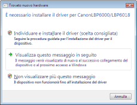
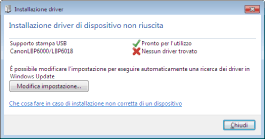
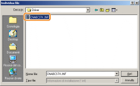
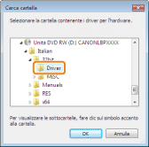
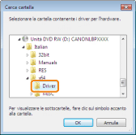
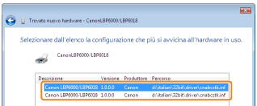

1
Collegare il cavo USB.
2
Accendere la stampante.

3
Accendere il computer e accedere al sistema come utente dotato dei diritti amministrativi.
|
→
|
Viene visualizzata la schermata d'installazione automatica Plug & Play.

|
 Se il driver della stampante viene installato automaticamente Se il driver della stampante viene installato automaticamenteSe il driver di questa stampante è stato installato in precedenza, l'installazione avviene automaticamente.
Per aggiornare il driver della stampante (o per installarlo manualmente), installare il driver della stampante dopo averlo disinstallato una volta.
Se viene visualizzata la schermata seguente
A causa di limitazioni di Windows potrebbe non essere possibile installare correttamente il driver della stampante, anche dopo che la stessa è stata rilevata dalla funzione Plug & Play. Fare clic su [Chiudi] e reinstallare il driver della stampante con l'"Installazione rapida".
|
4
Seguire le istruzioni su schermo per installare il driver della stampante.
|
NOTA
|
||
|
Quando si seleziona il file o la cartella in cui si trova il driver della stampante.
Selezionare uno dei seguenti file e cartelle.
Selezionare [CNABCSTK.INF] nelle cartelle [Italian] - [32bit] - [Driver] del CD-ROM fornito a corredo.
     Per un sistema operativo a 32 bit
Selezionare le cartelle nel CD-ROM: [Italian] - [32bit] - [Driver].
 Per un sistema operativo a 64 bit
Selezionare le cartelle nel CD-ROM: [Italian] - [x64] - [Driver].

Se viene visualizzata la schermata di selezione del driver della stampante
Ciò non comporta problemi poiché viene installato comunque lo stesso driver della stampante.

|

|
Completata l'installazione vengono create un'icona e la cartella della stampante.
 "Dopo l'installazione" "Dopo l'installazione" |